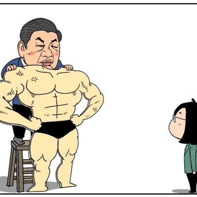

.. Лунный
@Victor_zhang233
@lbintngchg1 @PDChinese 母猪乱叫的原因
1.发情：猪发情的同时体内激素大量分泌，猪在激素的影响下会出现鸣叫和不吃食的情况。
2.应激：当圈舍内一直有陌生的人出入，圈舍内突然发生巨响，或者是灯光太亮等，这些突然的变化会刺激到猪，给猪造成应激，猪就会一直乱叫，情绪异常，食欲也会下降

路邊停車格
@lbintngchg1
@PDChinese 寧可老百姓餓肚子也要造原子彈🤣👏👏👏👏